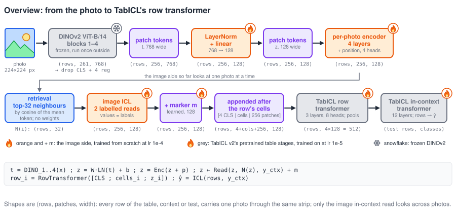
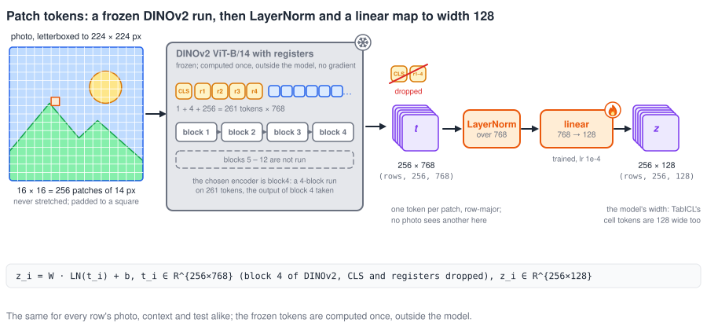
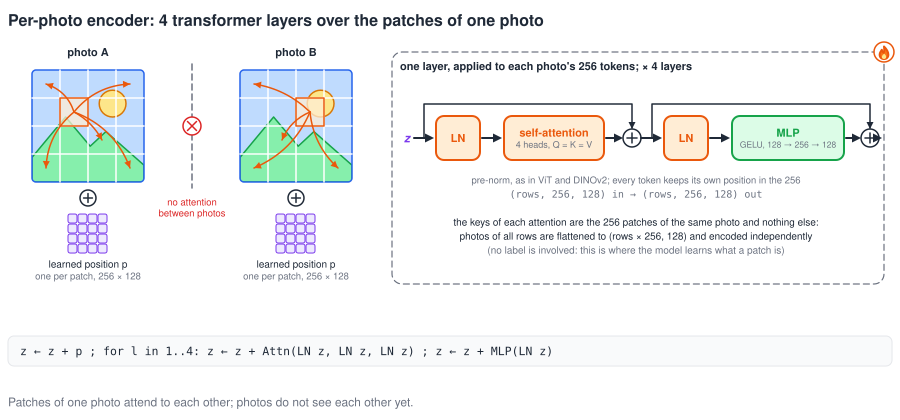
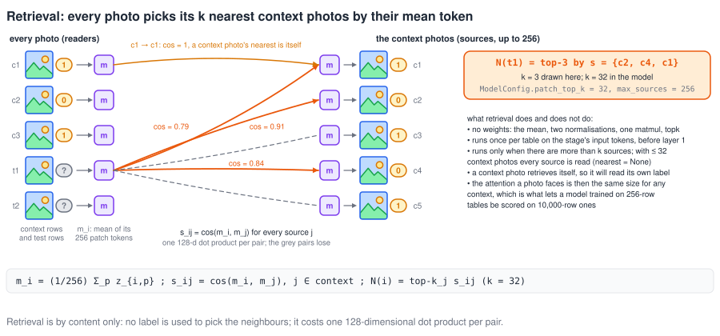
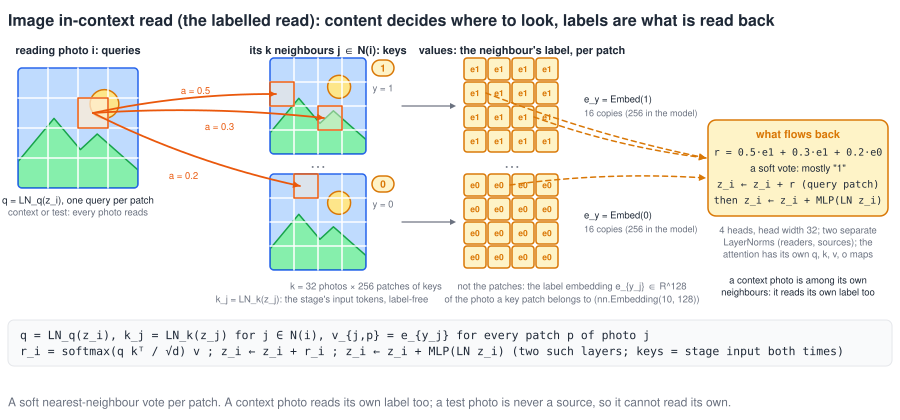
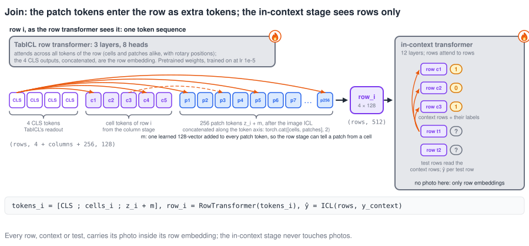
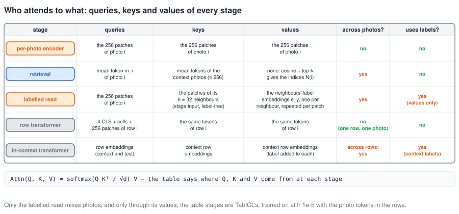

7 SVG panels in docs/figures/image-side/: from the photo to the point where its patch tokens join TabICL's row transformer. Shapes are (rows, patches, width).

0-overview.svgImage side overview: photo, frozen DINOv2 blocks 1–4, LayerNorm + linear, per-photo encoder, retrieval, image in-context read, marker, join with the row's cells, TabICL row and in-context transformers
1-tokens.svgPatch tokens: one photo cut into 16 × 16 = 256 patches of 14 px, DINOv2 adds CLS + 4 registers (261 tokens), runs blocks 1–4 only, drops CLS and registers, then LayerNorm and a linear map 768 → 128
2-per-photo-encoder.svgPer-photo encoder: a learned position embedding is added, then 4 pre-norm transformer layers in which the patches of one photo attend to each other and never to another photo
3-retrieval.svgRetrieval: every photo, context or test, is summarised by the mean of its 256 patch tokens; cosine similarity to the mean tokens of the context photos picks its top-32 neighbours; a context photo's nearest is itself
4-labelled-read.svgImage in-context read, the labelled read inside it: a reading photo's patches are the queries, the patches of its k neighbour photos are the keys, and the values are each neighbour's label embedding repeated for every one of its patches; what flows back is a weighted sum of labels
5-join.svgJoin: a row's 4 CLS tokens, its cell tokens and its 256 patch tokens plus the marker are one token sequence for TabICL's row transformer, which pools them into the row embedding; the in-context transformer then attends row to row
6-who-attends-to-what.svgWho attends to what: a table of the queries, keys and values of the per-photo encoder, retrieval, the image in-context read, the row transformer and the in-context transformer, and whether each looks across photos or uses labels